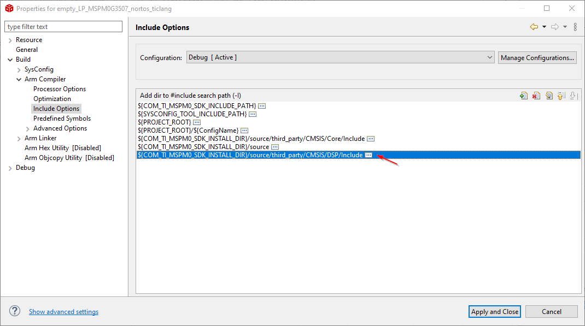
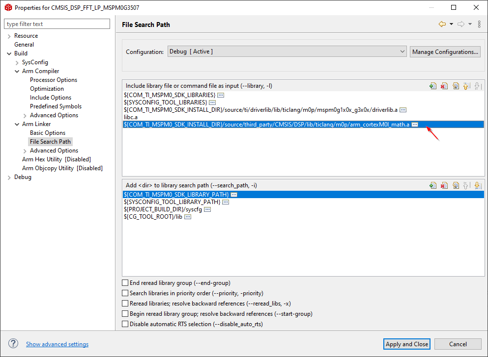
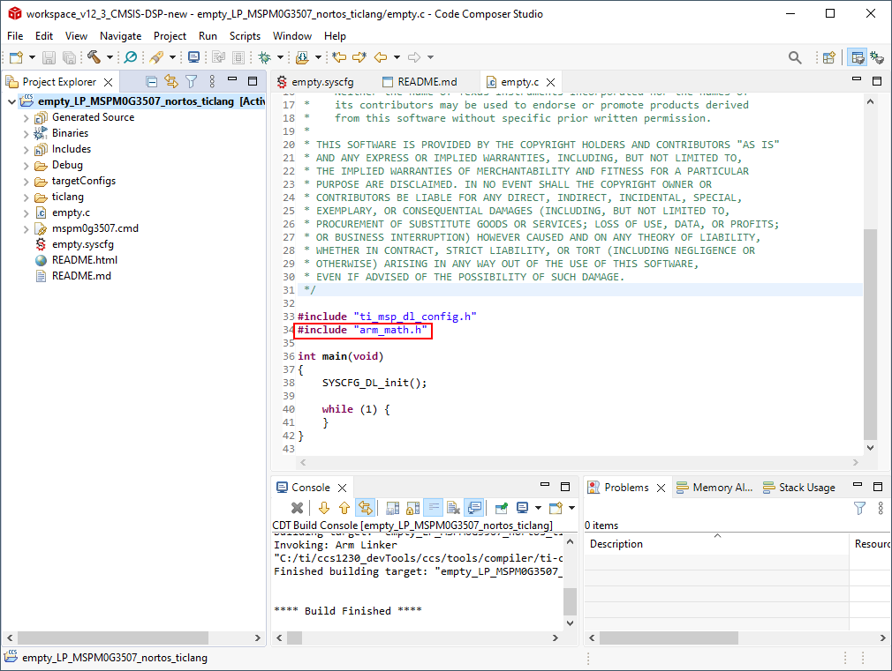

适用于 MSPM0 MCU 的 CMSIS DSP 库¶
1. 引言¶
德州仪器 （TI）支持 ARM Cortex 微控制器软件接口标准 （CMSIS），这是 Cortex-M 处理器系列的标准化硬件抽象层。CMSIS 计划的目的是为分散的行业提供一个统一的出色硬件和软件微控制器架构。
CMSIS DSP 库涵盖源代码和示例应用程序，并通过加入复数算术、矢量运算以及筛选和控制函数等常见 DSP 算法来节省时间。此库可以在 Arm Cortex-M 器件上使用，如 MCU 的 MSPM0 系列。
本文档将使用 MSPM0-SDK 来详细说明开始使用 CMSIS DSP 所需的步骤。 更多有关 CMSIS DSP 库的详细信息，请参阅 CMSIS DSP 软件库用户手册。
2. CMSIS DSP 源和库¶
MSPM0 SDK 在以下位置包括 CMSIS DSP 源和预编译库：
源：
<SDK>\source\third_party\CMSIS\DSP库：
<SDK>\source\third_party\CMSIS\DSP\lib
包括的预编译库用于以下编译器：
TI Arm Clang
Arm GCC
IAR
Keil
3. 将 CMSIS DSP 与 MSPM0 配合使用¶
3.1 使用 CMSIS DSP 示例¶
MSPM0 SDK 包括现成示例，这些示例可用于测试 CMSIS DSP 功能或 用作新工程的模板。
这些示例位于 <SDK>\examples\cmsis_dsp，也可在 TI 开发人员专区和 TI Resource Explorer 中找到。
TI 建议使用 cmsis_dsp_empty 来轻松启动包括库和头文件的空工程。
3.2 向现有工程添加 CMSIS DSP¶
以下步骤说明了如何使用 TI Arm Clang 向 Code Composer Studio （CCS）工程添加 CMSIS DSP， 但类似步骤也适用于其他 IDE 和编译器。
添加 CMSIS DSP Include 目录：
在 CCS 中，可在
${COM_TI_MSPM0_SDK_INSTALL_DIR}/source/third_party/CMSIS/DSP/Include中访问此路径 添加预编译库：
在 CCS 中，TI Arm Clang 的库位于
${COM_TI_MSPM0_SDK_INSTALL_DIR}/source/third_party/CMSIS/DSP/lib/ticlang/m0p/arm_cortexM0l_math.a 将“arm_math.h”包括到源文件：

4.使用 CMSIS DSP 和 MSPM0 开始开发！